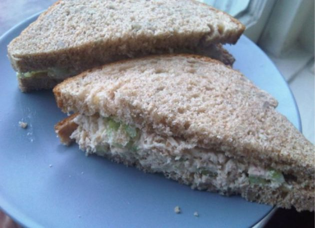

Tuna Sandwich

Description
Make a large bowl of tuna at the beginning of each week and have yourself a delicious, quick lunch for every day of the week!
Ingredients:
- mayonaise
- relish
- mustard
- canned tuna
- eggs
- seasoning salt
- sandwich bread
- Ritz crackers
Steps:
- Place eggs in a pot and set to boil.
- Mix the tuna into a bowl along with mayo, mustard, and relish.
- Once eggs have boiled, peel them and mix them in with tuna as well.
- Season with seasoning salt and place in fridge to cool.
- Place on sandwich bread or enjoy with Ritz crackers!
Home